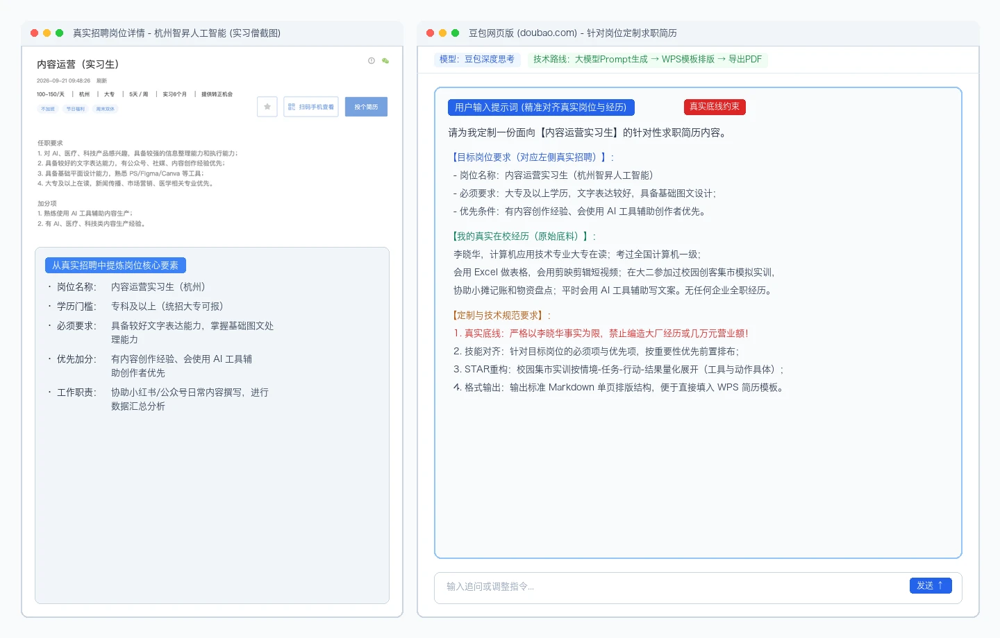
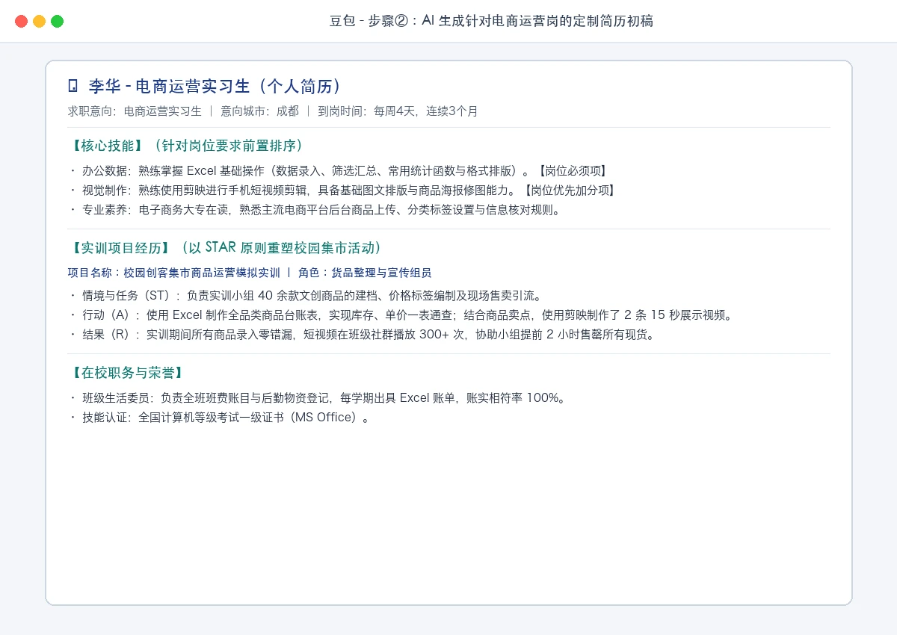
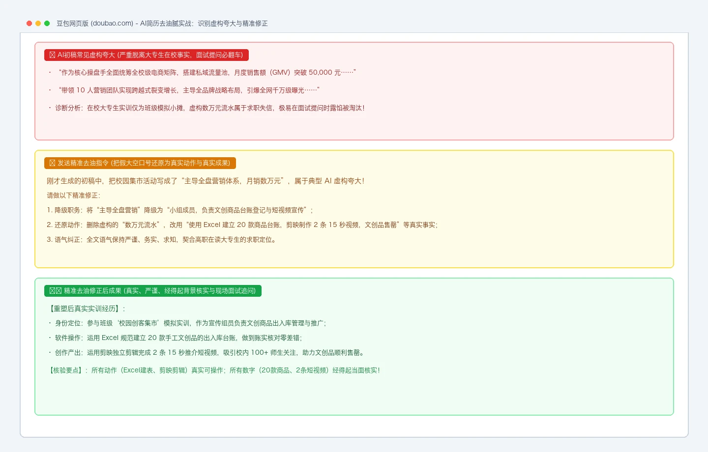
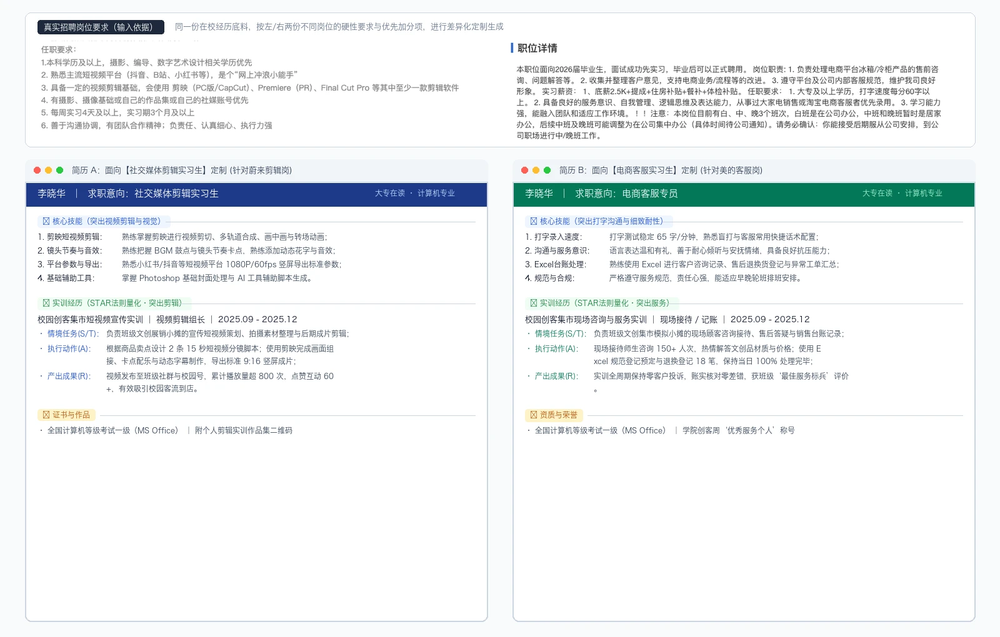

第六章｜AIGC应用与实践 · 第20次课 · 2 学时
AI制作简历：针对岗位定制简历
00 知识回顾
上一课我们学习了用 AI 从招聘长文中提取岗位要素表，并用个人条件完成了岗位匹配初筛。本课继续深化：筛选出心仪的目标岗位后，切忌用同一份粗糙的通用简历海投所有单位。本课学习如何让 AI 针对目标岗位的具体要求表，量身定制出重点突出、逻辑严密的专属求职简历。
01 任务预告
本课成果： 掌握从大模型内容定制到文字软件模板排版导出的全流程，针对 2 个不同目标岗位分别定制 2 份差异鲜明的标准单页求职简历（PDF 格式）。
完成标准：
- 制作技术规范：采用“豆包生成结构化内容 + WPS/Word 模板排版 + 导出标准单页 PDF”的标准技术路线；
- 经历真实客观：个人基本经历与实训事实零虚构、零夸大，经得起面试提问；
- 岗位精准对齐：依据目标岗位要求，核心技能前置排列，重点突出必须条件与优先加分项；
- 运用 STAR 原则：将校园与课堂实训经历转化为情境、任务、行动、结果四要素，量化具体产出；
- 剔除浮夸油腻：识别并修正 AI 擅自捏造的大厂背景、虚假销售额与空洞管理口号。
02 基础概念
1｜通用简历 vs 岗位定制简历：从经历台账到岗位答卷
通用简历是“个人经历台账”，习惯把在校所学课程、日常琐事从头到尾罗列，缺乏针对性，导致 HR 无法在 10 秒内看到与岗位的匹配度。 岗位定制简历是“拿着岗位要素表答题”：
- 将目标岗位最看重的技能（如剪映剪辑或 Excel 统计），优先排在技能栏最显眼的前列；
- 将与目标岗位要求直接吻合的实训经历详细展开，无关日常简略交代，让关键能力一目了然。
2｜经历重塑与真实性底线：从不同业务视角展现同一事实
- 不可逾越的真实底线： 没考过的证书、没学过的软件、没做过的实习，坚决不捏造。虚构履历在面试提问时极易被识破，属于求职失信。
- 合理合规的业务重塑： 同一段在校经历可以从不同的业务视角展现价值。例如完成过一次“校园集市模拟实训”：
- 投递【运营/文案岗】时：重点强调“整理 20 款商品资料台账、撰写宣传推文、统计销售数据”；
- 投递【视频剪辑岗】时：重点强调“使用剪映完成 2 条 15 秒推介短视频、设计分镜、字幕与节奏卡点”。
3｜STAR 法则：让实训经历由空洞口号变为可量化事实
避免使用“工作认真负责”“具备良好沟通能力”等主观套话，采用 STAR 四要素量化事实：
- S（情境 Situation）：明确背景（如：大二课程模拟集市实训、班级文体活动）；
- T（任务 Task）：个人具体负责的职责部分；
- A（行动 Action）：使用了什么软件或方法，执行了哪些具体操作；
- R（结果 Result）：最终产出成果是什么（如：输出 1 份商品清单、剪辑 2 条成片，无差错）。
4｜制作简历的技术全流程：大模型生成 + 模板排版 + 导出标准 PDF
高职学生制作一份规范专业的求职简历，必须掌握标准的技术实现链条：
- 大模型结构化生成技术（豆包网页版）：利用大模型的多轮对话能力，通过结构化提示词（明确岗位要素、个人底料、真实性底线），完成经历重塑与 STAR 表达，并输出规范的 Markdown 文本；
- 文档排版与版式设计技术（WPS Office / Word 单页简历模板）：大模型擅长组织文字逻辑，但不能替代视觉排版。将大模型生成的结构化内容填入 WPS 或 Word 的经典单页简历模板中，统一字体（推荐微软雅黑或思源黑体，正文字号 10.5pt-12pt）、模块间距与层级对齐，严格控制在标准单页内；
- 文件输出与交付技术（导出为标准 PDF 格式）：切忌直接发送
.docx格式文件。不同电脑或手机系统打开 Word 极易出现字体缺失、格式错位、表格跨页等乱码现象；必须通过“文件 → 导出为 PDF”，将版式彻底固化，确保在任何 HR 电脑与手机端查看时排版完全一致。
03 核心案例
教师示范｜针对真实招聘岗位定制一份标准单页实习简历
软件与材料： 豆包网页版，WPS Office（或 Microsoft Word）。
- 目标岗位：真实招聘【杭州智昇人工智能 · 内容运营实习生】（大专学历，具备文字功底与基础设计能力；会使用 AI 工具辅助创作者优先）。
- 个人原始底料：大专在读学生一段真实零散的在校材料（李晓华，计算机应用技术专业大专在读；考取全国计算机等级考试一级证书；会用 Excel 做表格，用剪映剪辑过班级活动视频；在大二参加过校园创客集市活动，协助小摊摆摊和记账；无全职经历）。
操作①｜输入真实岗位要素与底料，明确真实性底线
在豆包中输入定制提示词，将真实招聘岗位要素与个人原始底料结合，并严控真实性底线：
请为我定制一份面向【内容运营实习生】的针对性求职简历内容。
【目标岗位要求（真实招聘）】：
- 岗位名称：内容运营实习生（杭州智昇人工智能）
- 学历要求：大专及以上
- 必须要求：具备较好文字表达能力，掌握基础图文处理能力；
- 优先条件：有内容创作经验、会使用 AI 工具辅助创作者优先。
【我的真实在校经历】：
李晓华，计算机应用技术大专在读；考过全国计算机一级，会用 Excel 做表格，会用剪映剪辑短视频；在大二参加过校园创客集市模拟实训，协助小摊记账和物资统计；平时会用 AI 工具辅助写活动文案。没有任何企业全职工作经历。
【定制要求】：
1. 严格以真实经历为限，禁止编造大厂实习经历或数万元商业营业额；
2. 核心技能栏严格对应岗位的必须项（文字/排版）与优先项（剪映/AI辅助），优先前置排布；
3. 实训经历按 STAR 法则重构，量化具体工具与成果动作；
4. 输出标准 Markdown 单页结构，便于复制到 Word/WPS 简历模板。

真实岗位信息截图与在豆包中输入提示词，明确真实性底线。
操作②｜将大模型结构化内容导入 WPS 模板排版并导出 PDF
观察豆包生成的结构化内容，将其填入 WPS/Word 单页简历模板，完成规范排版并导出为标准 PDF：

将豆包生成的结构化内容填入 WPS 单页模板排版并导出标准 PDF 真实简历。
- 技能前置对齐：技能栏依次展示“AI 辅助内容创作”、“剪映短视频剪辑与图文排版”、“Excel 数据整理”，与目标岗位需求完全呼应。
- STAR 经历规范重塑：将零散的记账摆摊重塑为“校园创客集市新媒体运营模拟实训”，条理清晰地列出工具使用（Excel 建表盘点、剪映剪辑推介短片）与真实成果。
- 单页排版规范：在 WPS 中调整字体、行距与外边距，确保内容紧凑呈现在单张 A4 纸内，导出为标准 PDF 格式，版面稳固清爽。
操作③｜识别 AI 虚构夸大并实施精准去油腻
大模型往往习惯擅自给学生包装夸张的商业履历，如虚构“主导全校级电商战略，月度创造营业额 5 万元”等，必须发送精准指令予以剔除：
刚才生成的初稿中，把校园集市活动写成了“主导全盘营销体系，实现销售额数万元，带领10人团队实现突破”，这属于脱离大专在读实际的虚构夸大，面试极易被识破。
请做以下精准修正：
1. 将“主导全盘营销”改为“作为小组成员，负责文创商品出入库台账登记与宣传短视频剪辑”；
2. 删除虚构的“数万元营业额”，改用“使用 Excel 完成 20 款商品台账建立，剪映制作 2 条商品展示视频，文创品如期售罄”等真实动作；
3. 全文语气保持严谨、务实、求知。

针对AI初稿中的虚构夸大词句，发送精准指令去油腻并得到严谨表述。
通过去油腻修正，简历去除了所有不切实际的空话，突出了高职学生“能动手、懂工具、按时保质完成任务”的务实作风。
04 实践任务｜根据不同岗位表创建多份简历
软件与材料： 豆包网页版，WPS Office 或 Word。从下方真实岗位要素库中任选 2 个岗位，使用同一份个人在校底料，分别生成并排版出 2 份侧重点截然不同的定制简历（导出为 PDF）。
真实目标岗位要素库（任选其二）
- 岗位 1【杭州智昇人工智能 · 内容运营实习生】：大专及以上，文字表达清晰，具备基础图文设计能力；有内容创作经验、会使用 AI 工具辅助创作者优先。
- 岗位 2【NIO蔚来 · 社交媒体剪辑实习生】：熟练掌握剪映等至少一款剪辑软件，掌握字幕特效与镜头卡点；有自媒体作品集或视频剪辑经验者优先。
- 岗位 3【合肥美的电冰箱 · 电商客服实习生】：大专及以上，打字速度稳定（≥50字/分），文字沟通耐心清晰；有客服经历或班级协调服务经验者优先。
没有准备个人经历的同学，可直接选用下方标准在校底料：
【在校生标准底料】：
李晓华，高职大专在读（计算机应用技术 / 电子商务 / 移动互联专业）。
在校实训：完成《AIGC应用与实践》课程项目（制作图片压缩工具、招聘信息提取分析）；参与过校园创客集市模拟实训。
日常技能：熟练使用 Word/Excel 处理图文表格；会用剪映剪辑视频与卡点字幕；掌握打字与日常网络沟通。
在校职务：担任过班级宣传干事，负责班级日常通知发布、考勤与实训材料登记。
操作①｜面向第 1 个岗位（如短视频剪辑）生成并排版简历 A
在豆包中输入下方指令，重点突出视频剪辑、分镜与视觉呈现：
请根据我的在校底料，为我定制一份面向【社交媒体剪辑实习生】的针对性简历内容：
【目标岗位】：社交媒体剪辑实习生（要求熟练操作剪映，掌握分镜与字幕特效；有视频作品集优先）。
【我的真实底料】：【粘贴个人实际底料，或使用本页在校生标准底料】
【定制要求】：
1. 坚守真实底线，不得虚构商业项目；
2. 核心技能栏置顶“剪映短视频剪辑”“分镜脚本设计”“音效卡点与字幕制作”，弱化纯文字编辑；
3. 实训经历中重点突出短视频制作任务、镜头组接与成片导出；
4. 输出标准 Markdown 格式。
生成后复制到 WPS/Word 单页简历模板中，微调格式并导出为 简历A_剪辑岗.pdf。
操作②｜面向第 2 个岗位（如电商客服）生成并排版简历 B
在同一对话中，要求 AI 基于完全相同的底料，转向第 2 个岗位重新组织：
现在我要改投【电商客服实习生】。
请基于完全相同的个人底料，为我定制一份专属简历 B 内容：
【目标岗位】：电商客服实习生（要求大专学历、打字速度稳定、文字沟通耐心清晰；有协调沟通经验优先）。
【定制要求】：
1. 技能栏置顶“打字录入速度（60字/分）”“客户沟通耐心”“Excel工单与数据登记”；
2. 实训经历中重点突出集市现场顾客接待解答、客户退换货登记、Excel台账汇总与零失误记录；
3. 输出与简历 A 格式一致的单页结构。
生成后复制到 WPS/Word 单页模板中，导出为 简历B_客服岗.pdf。
操作③｜双份简历横向对比与核验
将排版好的两份 PDF 简历并排打开，核验是否展现出鲜明的业务针对性：

同一份在校底料分别面向剪辑与客服岗位，核心技能与经历侧重点截然不同。
最终集中查看三项：
- 岗位对齐鲜明：剪辑岗简历第一眼突出视频制作能力，客服岗简历第一眼突出打字沟通与细致耐心；
- 经历真实量化：运用 STAR 法则重构经历，所有工具名（剪映、Excel）与输出动作真实具体；
- 交付排版规范：两份简历均采用标准单页排版并导出为 PDF，版面紧凑美观，无任何跨页乱码。
05 本课总结
一份简历不能通吃所有岗位。AI 制作简历的核心不是“凭空美化”，而是**“精准对应”**——用目标岗位的要素表作为滤镜，帮助高职学生从有限的在校经历中提炼出最匹配的动作与成果。
| 成果自查维度 | 观察核验要点 |
|---|---|
| 技术流程规范 | 遵循“AI结构化生成 + WPS/Word单页排版 + 导出标准PDF”全流程，版面稳定 |
| 岗位对应度 | 核心技能排序严格对齐岗位的“必须项”与“优先项”，一目了然 |
| 经历量化度 | 运用 STAR 法则重塑经历，包含具体的数字、软件名与产出结果 |
| 真实合规度 | 剔除所有 AI 虚构夸张词，表述与高职在读学生的身份能力完全相符 |
下节预告： 第21次课我们将学习《国内无代码工作流：搭建第一条可运行路径》，把对话中的处理逻辑转化为自动化运行的工作流应用。